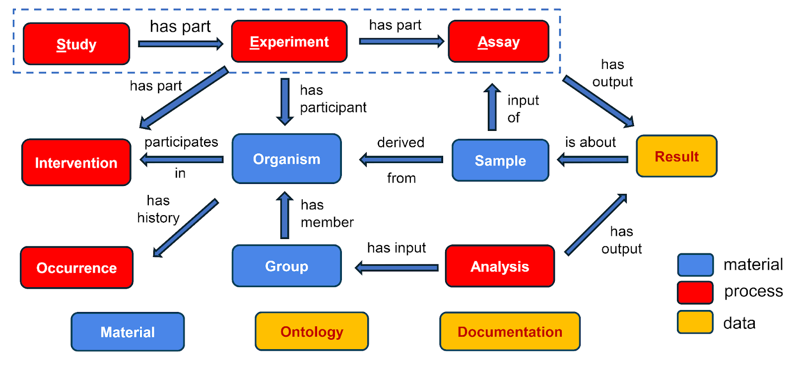

SEA-CDM
The Study-Experiment-Assay Common Data Model (SEA CDM) is a new flexible data model designed to represent complex biological studies across multiple domains. Initiated by the He lab at the University of Michigan, SEA-CMD enables seamless integration of study metadata, experiment data and assay outputs. Explore the visual representation of the SEA -CDM below to see how it supports interoperability and structured biological research.

The full details of SEA-CDM are included within the documentation on this or as part of an intended publication.
Full group of GitHub repositories are also available
here.